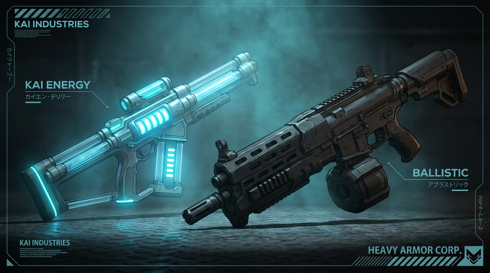
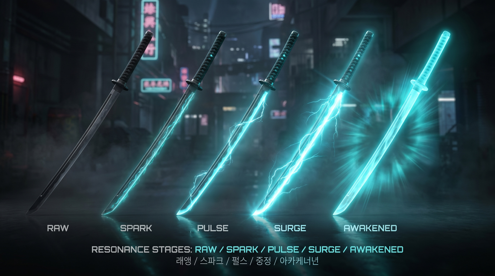

Doppio binario armi (lezione GGO). Niente bonus casuali: stat fisse per modello + stadio di Risonanza. In un TPS conta la mira, non il roll.
Due famiglie d'arma con ruoli opposti, ciascuna naturalmente forte in un dominio. La scelta non è "migliore/peggiore" ma dove e contro chi.

Leggere, precise, range lungo, estetica sci-fi col glow ciano. Ma vengono disperse dai campi difensivi (il campo dell'Heavy) → eccellono nel PvE e nel poke a distanza, soffrono contro chi porta schermatura.
Pesanti, danno alto, perforano i campi difensivi. Balistica reale (caduta, rinculo) e munizioni finite. Hardware militare opaco, niente glow → il loro punto è bucare ciò che le ottiche non scalfiscono.
L'arma non sale di numero: entra in risonanza col KAI. Cinque stadi, glow crescente. Una Risvegliata in città si riconosce a vista — è status puro, non solo statistica.

Nessun glow. L'arma di partenza.
Primo upgrade, senza rischio.
Venature KAI visibili sulla lama.
Aura completa. Riconoscibile in città = status.
Salire di stadio non è gratis né garantito. Ogni tentativo consuma materiali e oltre il primo stadio ha una chance di fallire. È l'unico modo di rovinare un'arma — morire non rompe mai l'equip (vedi Extraction · Loot). La rottura vive solo qui, nella scommessa del power-up.
| Stadio | Esito del fail | Rischio |
|---|---|---|
| 1 · Temprata | Nessuno | Sicuro |
| 2 · Affinata | Niente — consumi materiali, ritenti | Basso |
| 3 | Downgrade −1 stadio | Medio |
| 4 · Risvegliata | Downgrade −1 stadio (no destroy) | Alto |
| Oltre (opzionale) | Destroy — Metin puro | Estremo |
Fail = materiali bruciati → rifarmi → ritenti. La rottura tiene l'economia viva: il gear non si accumula all'infinito, c'è sempre richiesta di materiali.
I materiali Risonanza cadono da mob d'élite e world-boss in zona rossa/nera, mai comprabili per potenza (no pay-to-win). Vuoi l'arma forte → vai deep. È il pull universale dell'open world.
Cinque tier di provenienza. Il prezzo in Crediti (Cr) àncora l'economia e segnala quanto in profondità nel mondo bisogna spingersi per ottenere un pezzo.
| Tier | Fonte | Prezzo (Cr) | Significato |
|---|---|---|---|
| Comune | Shop base | < 1.000 | Kit d'ingresso, sempre disponibile |
| Militare | Shop, drop di campo | 5–20.000 | Lo standard competitivo, accessibile farmando |
| Raro | Drop dungeon, tornei | 50–150.000 | Richiede rischio PvE o piazzamenti |
| Pre-Collasso | Boss, finali | 2–20M | Tecnologia perduta, endgame profondo |
| Leggendario | Boss segreti, 1° BR, eventi | 20–30M | Pezzi unici, status da server |
La scelta di design più importante dell'equip: le stat sono fisse per modello e stadio. Nessun bonus randomico, nessun grind di "perfect roll".
In uno sparatutto in terza persona ciò che decide il duello è la mira e il movimento, non un numero nascosto sull'arma. Il roll casuale premierebbe la fortuna invece della skill — l'opposto del pilastro del gioco.
Due giocatori con lo stesso modello allo stesso stadio hanno la stessa arma. La differenza sei tu. Niente farm di duplicati per il roll giusto: il tempo va in pratica, non in lotteria.